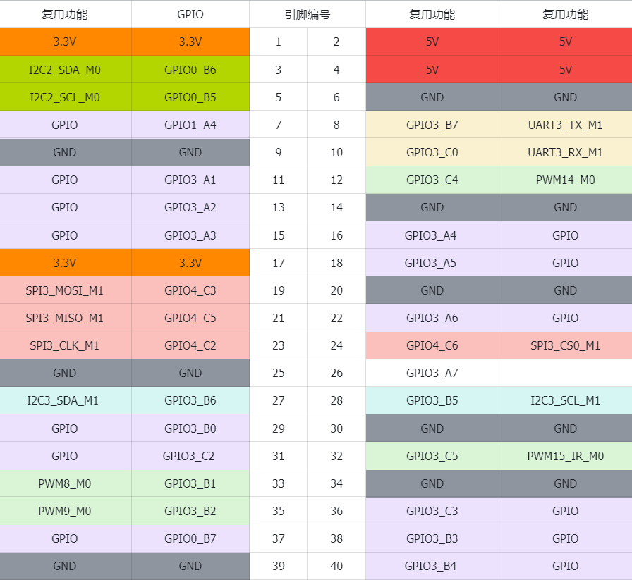

<!DOCTYPE lake>
<p data-lake-id="u5358d457" id="u5358d457"><span class="lake-fontsize-12" data-lake-id="uface8aa0" id="uface8aa0" style="color: rgb(51, 51, 51)">泰山派Linux提供了GPIO子系统驱动框架，使用该驱动框架即可灵活地控制板子上的GPIO。</span></p><h1 data-lake-id="lrAhe" id="lrAhe"><span data-lake-id="u459558bf" id="u459558bf" style="color: rgb(51, 51, 51)">GPIO命名</span></h1><p data-lake-id="ufb8bcb35" id="ufb8bcb35"><span class="lake-fontsize-12" data-lake-id="ua8c734ba" id="ua8c734ba" style="color: rgb(51, 51, 51)">泰山派开发板板载了一个40PIN 2.54间距的贴片排针，排针的引脚定义兼容经典40PIN接口。</span></p><p data-lake-id="u9dc22fb4" id="u9dc22fb4"></p><p data-lake-id="uc0ca68a6" id="uc0ca68a6"><span class="lake-fontsize-12" data-lake-id="ubf32c571" id="ubf32c571" style="color: rgb(51, 51, 51)">在后续对GPIO进行操作前，我们需要先了解RK3566的GPIO命名规则， 此处以 </span><strong><span class="lake-fontsize-12" data-lake-id="uecb36cac" id="uecb36cac" style="color: rgb(51, 51, 51)">GPIO0_B7</span></strong><span class="lake-fontsize-12" data-lake-id="u7ec52818" id="u7ec52818" style="color: rgb(51, 51, 51)"> 举例：</span></p><table class="lake-table" data-lake-id="DFJtM" id="DFJtM" margin="true" style="width: 750px"><colgroup><col width="250"/><col width="250"/><col width="250"/></colgroup><tbody><tr data-lake-id="u8104fbec" id="u8104fbec"><td data-lake-id="u64e673da" id="u64e673da"><p data-lake-id="u676cd336" id="u676cd336" style="text-align: left"><strong><span class="lake-fontsize-12" data-lake-id="ub61a4b83" id="ub61a4b83" style="color: rgb(51, 51, 51)">GPIO0</span></strong></p></td><td data-lake-id="udb37310b" id="udb37310b"><p data-lake-id="u3d5fa8ad" id="u3d5fa8ad" style="text-align: left"><strong><span class="lake-fontsize-12" data-lake-id="u41a0de6d" id="u41a0de6d" style="color: rgb(51, 51, 51)">B</span></strong></p></td><td data-lake-id="u9a2be655" id="u9a2be655"><p data-lake-id="u2c9ff0e9" id="u2c9ff0e9" style="text-align: left"><strong><span class="lake-fontsize-12" data-lake-id="u98a9f565" id="u98a9f565" style="color: rgb(51, 51, 51)">7</span></strong></p></td></tr><tr data-lake-id="u48ebdcc0" id="u48ebdcc0"><td data-lake-id="u40ed01fb" id="u40ed01fb"><p data-lake-id="ud1f497d4" id="ud1f497d4" style="text-align: left"><strong><span class="lake-fontsize-12" data-lake-id="u17f468a2" id="u17f468a2" style="color: rgb(51, 51, 51)">控制器（bank）</span></strong></p></td><td data-lake-id="u0d8eb3dc" id="u0d8eb3dc"><p data-lake-id="u60472400" id="u60472400" style="text-align: left"><span class="lake-fontsize-12" data-lake-id="u09679376" id="u09679376" style="color: rgb(51, 51, 51)">端口（port）</span></p></td><td data-lake-id="u7d9995df" id="u7d9995df"><p data-lake-id="ucfe1718d" id="ucfe1718d" style="text-align: left"><span class="lake-fontsize-12" data-lake-id="uadc25bbf" id="uadc25bbf" style="color: rgb(51, 51, 51)">索引序号（pin）</span></p></td></tr></tbody></table><ul list="u4836712e"><li data-lake-id="u78bdb7a3" fid="u71eaa76d" id="u78bdb7a3"><strong><span class="lake-fontsize-12" data-lake-id="u2071d4bb" id="u2071d4bb" style="color: rgb(51, 51, 51)">控制器（bank）</span></strong><span class="lake-fontsize-12" data-lake-id="uf5c78d67" id="uf5c78d67" style="color: rgb(51, 51, 51)">：rk3566有5个GPIO控制器分别是GPIO0-GPIO4，一个控制器下面包含ABCD个端口，每个端口下有包含0-7个索引序号，所以一个控制器可控制32个IO引脚。</span></li><li data-lake-id="u88a9cc01" fid="u71eaa76d" id="u88a9cc01"><strong><span class="lake-fontsize-12" data-lake-id="u05b832fa" id="u05b832fa" style="color: rgb(51, 51, 51)">端口（port）</span></strong><span class="lake-fontsize-12" data-lake-id="ua2f464e6" id="ua2f464e6" style="color: rgb(51, 51, 51)">： A、B、C、D。对应着数字：0-3所以A=0、B=1、C=2、D=3</span></li><li data-lake-id="ufe1da979" fid="u71eaa76d" id="ufe1da979"><strong><span class="lake-fontsize-12" data-lake-id="ue65e8ff2" id="ue65e8ff2" style="color: rgb(51, 51, 51)">索引序号（pin）</span></strong><span class="lake-fontsize-12" data-lake-id="u566d2628" id="u566d2628" style="color: rgb(51, 51, 51)">：固定为0-7共计8个数</span></li></ul><p data-lake-id="u7eb2eae9" id="u7eb2eae9"><span class="lake-fontsize-12" data-lake-id="uf5f242f0" id="uf5f242f0" style="color: rgb(51, 51, 51)">​</span><br/></p><p data-lake-id="u949250b8" id="u949250b8"><strong><span class="lake-fontsize-12" data-lake-id="u74eee061" id="u74eee061" style="color: rgb(51, 51, 51)">代入 GPIO0_B7 ，该引脚的 ID 可以按照以下规则组成：</span></strong></p><p data-lake-id="u1bf3b3c3" id="u1bf3b3c3"><br/></p><p data-lake-id="uc1d00c6b" id="uc1d00c6b"><span class="lake-fontsize-12" data-lake-id="u3df5ef69" id="u3df5ef69" style="color: rgb(51, 51, 51)">控制器 (bank) 为 0，表示第 0 组控制器。</span></p><p data-lake-id="u231576bd" id="u231576bd"><span class="lake-fontsize-12" data-lake-id="uca34e2c5" id="uca34e2c5" style="color: rgb(51, 51, 51)">端口（port）为 B，表示端口号为1。</span></p><p data-lake-id="u879db621" id="u879db621"><span class="lake-fontsize-12" data-lake-id="u5856a12e" id="u5856a12e" style="color: rgb(51, 51, 51)">索引序号（pin）为7。</span></p><p data-lake-id="u33a1c69c" id="u33a1c69c"><span class="lake-fontsize-12" data-lake-id="u5af38127" id="u5af38127" style="color: rgb(51, 51, 51)">根据计算公式：32 x 0 + 1 x 8 + 7 = 15，可以得到引脚ID为15。</span></p><p data-lake-id="ubd77831b" id="ubd77831b"><span class="lake-fontsize-12" data-lake-id="u880e1444" id="u880e1444" style="color: rgb(51, 51, 51)">​</span><br/></p><p data-lake-id="u164a23a3" id="u164a23a3"><span class="lake-fontsize-12" data-lake-id="u27049d67" id="u27049d67" style="color: #DF2A3F">注意: 这里的引脚ID是芯片上面的引脚编号，非泰山派开发板上面的丝印15</span></p><p data-lake-id="u80930254" id="u80930254"><span class="lake-fontsize-12" data-lake-id="ude6cd778" id="ude6cd778" style="color: #DF2A3F">​</span><br/></p><table class="lake-table" col-head="#E8F7CF;#2A4200" data-lake-id="iIyXX" id="iIyXX" margin="true" row-head="#E8F7CF;#2A4200" style="width: 750px" width-mode="normal"><colgroup><col width="150"/><col width="150"/><col width="150"/><col width="150"/><col width="150"/></colgroup><tbody><tr data-lake-id="uf9247b31" id="uf9247b31" style="height: 37px"><td data-lake-id="ue67b911b" id="ue67b911b"><p data-lake-id="uafdf5025" id="uafdf5025" style="text-align: center"><br/></p></td><td data-lake-id="u3aee3313" id="u3aee3313"><p data-lake-id="ucc7c5f9e" id="ucc7c5f9e" style="text-align: center"><span data-lake-id="uf108e1d2" id="uf108e1d2">A</span></p></td><td data-lake-id="u557e7767" id="u557e7767"><p data-lake-id="ub0b10dac" id="ub0b10dac" style="text-align: center"><span data-lake-id="u8f5edb6b" id="u8f5edb6b">B</span></p></td><td data-lake-id="u4d81e79f" id="u4d81e79f"><p data-lake-id="u72a1472b" id="u72a1472b" style="text-align: center"><span data-lake-id="u8009e76b" id="u8009e76b">C</span></p></td><td data-lake-id="ubc236766" id="ubc236766"><p data-lake-id="u7266f390" id="u7266f390" style="text-align: center"><span data-lake-id="u40954ed7" id="u40954ed7">D</span></p></td></tr><tr data-lake-id="uc1d8a2ae" id="uc1d8a2ae"><td data-lake-id="u33ec19cb" id="u33ec19cb"><p data-lake-id="ue73d39e4" id="ue73d39e4" style="text-align: center"><span data-lake-id="u835a18f9" id="u835a18f9">GPIO0</span></p></td><td data-lake-id="u4c454c77" id="u4c454c77"><p data-lake-id="u8144f5b2" id="u8144f5b2" style="text-align: center"><span data-lake-id="u7e06bb78" id="u7e06bb78">0~7</span></p></td><td data-lake-id="ub9e0e259" id="ub9e0e259"><p data-lake-id="ub50a841a" id="ub50a841a" style="text-align: center"><span data-lake-id="u5a26dedd" id="u5a26dedd">8~15</span></p></td><td data-lake-id="u10458dca" id="u10458dca"><p data-lake-id="u3d091eea" id="u3d091eea" style="text-align: center"><span data-lake-id="u292fb0ab" id="u292fb0ab">16~23</span></p></td><td data-lake-id="u6e0f9944" id="u6e0f9944"><p data-lake-id="u70a339bc" id="u70a339bc" style="text-align: center"><span data-lake-id="u0aac1be3" id="u0aac1be3">24~31</span></p></td></tr><tr data-lake-id="u0b183cde" id="u0b183cde"><td data-lake-id="u33336699" id="u33336699"><p data-lake-id="u84e21163" id="u84e21163" style="text-align: center"><span data-lake-id="u4f5ae2f5" id="u4f5ae2f5">GPIO1</span></p></td><td data-lake-id="u1f5de906" id="u1f5de906"><p data-lake-id="u9c8af962" id="u9c8af962" style="text-align: center"><span data-lake-id="u8e076c0e" id="u8e076c0e">32~39</span></p></td><td data-lake-id="u2241d3d1" id="u2241d3d1"><p data-lake-id="u11e66170" id="u11e66170" style="text-align: center"><span data-lake-id="uf31439be" id="uf31439be">40~47</span></p></td><td data-lake-id="ud023839f" id="ud023839f"><p data-lake-id="uaaed43f3" id="uaaed43f3" style="text-align: center"><span data-lake-id="u5fd4b7bf" id="u5fd4b7bf">48~55</span></p></td><td data-lake-id="u5a0150dd" id="u5a0150dd"><p data-lake-id="u4674cc31" id="u4674cc31" style="text-align: center"><span data-lake-id="u35f8fecb" id="u35f8fecb">56~63</span></p></td></tr><tr data-lake-id="u82918f3f" id="u82918f3f"><td data-lake-id="u89667794" id="u89667794"><p data-lake-id="ud4d003ac" id="ud4d003ac" style="text-align: center"><span data-lake-id="u4067808a" id="u4067808a">GPIO2</span></p></td><td data-lake-id="u5eb196c0" id="u5eb196c0"><p data-lake-id="ue4f75248" id="ue4f75248" style="text-align: center"><span data-lake-id="ua3b5d8dd" id="ua3b5d8dd">64~71</span></p></td><td data-lake-id="ucdc93a8c" id="ucdc93a8c"><p data-lake-id="u7a5536d8" id="u7a5536d8" style="text-align: center"><span data-lake-id="udca4569d" id="udca4569d">72~79</span></p></td><td data-lake-id="uda05a73d" id="uda05a73d"><p data-lake-id="u0369410b" id="u0369410b" style="text-align: center"><span data-lake-id="u419bc82a" id="u419bc82a">80~87</span></p></td><td data-lake-id="u6a9a0266" id="u6a9a0266"><p data-lake-id="ud0b19e3d" id="ud0b19e3d" style="text-align: center"><span data-lake-id="uedf274fb" id="uedf274fb">88~95</span></p></td></tr><tr data-lake-id="u2798e065" id="u2798e065"><td data-lake-id="ued1e54eb" id="ued1e54eb"><p data-lake-id="u1f214103" id="u1f214103" style="text-align: center"><span data-lake-id="ua57bd486" id="ua57bd486">GPIO3</span></p></td><td data-lake-id="u20895831" id="u20895831"><p data-lake-id="u900c698d" id="u900c698d" style="text-align: center"><span data-lake-id="u0ba70118" id="u0ba70118">96~103</span></p></td><td data-lake-id="u3ea4d411" id="u3ea4d411"><p data-lake-id="uf34a71ba" id="uf34a71ba" style="text-align: center"><span data-lake-id="u6143afee" id="u6143afee">104~111</span></p></td><td data-lake-id="u801ea194" id="u801ea194"><p data-lake-id="u778259ea" id="u778259ea" style="text-align: center"><span data-lake-id="uf66916e8" id="uf66916e8">112~119</span></p></td><td data-lake-id="u1adbbc56" id="u1adbbc56"><p data-lake-id="uec53374d" id="uec53374d" style="text-align: center"><span data-lake-id="u75763f63" id="u75763f63">120~127</span></p></td></tr><tr data-lake-id="u040598c2" id="u040598c2"><td data-lake-id="ucca1f737" id="ucca1f737"><p data-lake-id="u169450e6" id="u169450e6" style="text-align: center"><span data-lake-id="u2ec987d2" id="u2ec987d2">GPIO4</span></p></td><td data-lake-id="u436711a2" id="u436711a2"><p data-lake-id="u9b0869c0" id="u9b0869c0" style="text-align: center"><span data-lake-id="ud0cec112" id="ud0cec112">128~135</span></p></td><td data-lake-id="uf2bba4c1" id="uf2bba4c1"><p data-lake-id="ua18a8f52" id="ua18a8f52" style="text-align: center"><span data-lake-id="uebdd0698" id="uebdd0698">136~143</span></p></td><td data-lake-id="u330791a4" id="u330791a4"><p data-lake-id="u5ee90444" id="u5ee90444" style="text-align: center"><span data-lake-id="u40672d08" id="u40672d08">144~151</span></p></td><td data-lake-id="u6bb84ee1" id="u6bb84ee1"><p data-lake-id="ud2800f55" id="ud2800f55" style="text-align: center"><span data-lake-id="u2a1e3d2c" id="u2a1e3d2c">152~159</span></p></td></tr></tbody></table><h1 data-lake-id="siSu5" id="siSu5"><span data-lake-id="u957a0d9c" id="u957a0d9c" style="color: rgb(51, 51, 51)">sysfs操控GPIO</span></h1><p data-lake-id="uab75223a" id="uab75223a"><span class="lake-fontsize-12" data-lake-id="u73ff3105" id="u73ff3105" style="color: rgb(51, 51, 51)">在Linux中，最常见的读写GPIO方式就是用GPIO sysfs interface， 是通过操作 </span><code data-lake-id="u90cc816e" id="u90cc816e"><em><span class="lake-fontsize-12" data-lake-id="ue1bb429c" id="ue1bb429c" style="color: rgb(51, 51, 51)">/sys/class/gpio</span></em></code><span class="lake-fontsize-12" data-lake-id="ub40ef2be" id="ub40ef2be" style="color: rgb(51, 51, 51)"> 目录下的 </span><code data-lake-id="u121db306" id="u121db306"><em><span class="lake-fontsize-12" data-lake-id="uf96c723f" id="uf96c723f" style="color: rgb(51, 51, 51)">export</span></em><span class="lake-fontsize-12" data-lake-id="u02a4427d" id="u02a4427d" style="color: rgb(51, 51, 51)"> </span></code><span class="lake-fontsize-12" data-lake-id="uaac062f6" id="uaac062f6" style="color: rgb(51, 51, 51)">、 </span><code data-lake-id="u7d5e9644" id="u7d5e9644"><em><span class="lake-fontsize-12" data-lake-id="u104303d5" id="u104303d5" style="color: rgb(51, 51, 51)">unexport</span></em><span class="lake-fontsize-12" data-lake-id="ub67b9315" id="ub67b9315" style="color: rgb(51, 51, 51)"> </span></code><span class="lake-fontsize-12" data-lake-id="ub8d017b1" id="ub8d017b1" style="color: rgb(51, 51, 51)">、</span><code data-lake-id="uc2aae779" id="uc2aae779"><em><span class="lake-fontsize-12" data-lake-id="ud5ab39f0" id="ud5ab39f0" style="color: rgb(51, 51, 51)">gpio{N}/direction</span></em></code><span class="lake-fontsize-12" data-lake-id="uf07def21" id="uf07def21" style="color: rgb(51, 51, 51)">, </span><code data-lake-id="ub4ebe370" id="ub4ebe370"><em><span class="lake-fontsize-12" data-lake-id="ua2f49118" id="ua2f49118" style="color: rgb(51, 51, 51)">gpio{N} /value</span></em></code><span class="lake-fontsize-12" data-lake-id="u61e610d4" id="u61e610d4" style="color: rgb(51, 51, 51)"> （用实际引脚号替代{N}）等文件实现的，经常出现shell脚本里面。</span><span class="lake-fontsize-12" data-lake-id="u869a477c" id="u869a477c" style="color: #DF2A3F"> 在kernel 4.8开始，加入了libgpiod的支持；而原有基于sysfs的访问方式，将被逐渐放弃。</span></p><h2 data-lake-id="n6jBZ" id="n6jBZ"><span data-lake-id="u811aa5d3" id="u811aa5d3" style="color: rgb(51, 51, 51)">GPIO输出测试</span></h2><p data-lake-id="u3a3a1aad" id="u3a3a1aad"><span class="lake-fontsize-12" data-lake-id="uc833ba43" id="uc833ba43" style="color: rgb(119, 119, 119)">使用杜邦线连接GPIO0_B7 引脚 和 核心板的P53引脚，看看能否使用下面的代码控制核心板的LED，实现亮灭效果。当然也可以接入逻辑分析仪，通过查看高低电平的变化。</span></p><span class="yuque-card-unsupported">[codeblock]</span><h2 data-lake-id="C5L7B" id="C5L7B"><span data-lake-id="u3b4f7210" id="u3b4f7210" style="color: rgb(51, 51, 51)">GPIO输入测试</span></h2><p data-lake-id="uc704279e" id="uc704279e"><span class="lake-fontsize-12" data-lake-id="u30eb1f0b" id="u30eb1f0b" style="color: rgb(119, 119, 119)">使用杜邦线连接GPIO0_B7 引脚 和 核心板的P32引脚（核心板上面的按钮外接了P32） ，然后对按键进行按下和弹起操作，并且通过下面的代码打印出来的值。</span></p><span class="yuque-card-unsupported">[codeblock]</span><h1 data-lake-id="i7U6T" id="i7U6T"><span data-lake-id="uc31d5dd6" id="uc31d5dd6" style="color: rgb(51, 51, 51)">libgpiod操控GPIO</span></h1><p data-lake-id="uc8b7c7fe" id="uc8b7c7fe"><span class="lake-fontsize-12" data-lake-id="ubea167fe" id="ubea167fe" style="color: rgb(51, 51, 51)">libgpiod是一种字符设备接口，GPIO访问控制是通过操作字符设备文件（比如 </span><em><span class="lake-fontsize-12" data-lake-id="u6600b765" id="u6600b765" style="color: rgb(51, 51, 51)">/dev/gpiodchip0</span></em><span class="lake-fontsize-12" data-lake-id="ube8f959f" id="ube8f959f" style="color: rgb(51, 51, 51)"> gpio控制器）实现的， 并通过libgpiod提供一些命令工具、c库以及python封装。想要使用libgpiod，需要在板卡上安装libgpiod库。</span></p><span class="yuque-card-unsupported">[codeblock]</span><p data-lake-id="ub3c8750c" id="ub3c8750c"><span class="lake-fontsize-12" data-lake-id="u36c24696" id="u36c24696" style="color: rgb(51, 51, 51)">常用的命令行如下，可使用 </span><em><span class="lake-fontsize-12" data-lake-id="uaadeaae0" id="uaadeaae0" style="color: rgb(51, 51, 51)">-h</span></em><span class="lake-fontsize-12" data-lake-id="u51f385f2" id="u51f385f2" style="color: rgb(51, 51, 51)"> 查看命令相对应的使用说明（以GPIO0_B7为例）</span></p><table class="lake-table" data-lake-id="ln7g6" id="ln7g6" margin="true" style="width: 748px"><colgroup><col width="187"/><col width="187"/><col width="187"/><col width="187"/></colgroup><tbody><tr data-lake-id="u2676234b" id="u2676234b"><td data-lake-id="ubbd043fe" id="ubbd043fe"><p data-lake-id="u16287b4c" id="u16287b4c" style="text-align: left"><strong><span class="lake-fontsize-12" data-lake-id="uea2432e7" id="uea2432e7" style="color: rgb(51, 51, 51)">命令</span></strong></p></td><td data-lake-id="uf48839a2" id="uf48839a2"><p data-lake-id="u7a318d22" id="u7a318d22" style="text-align: left"><strong><span class="lake-fontsize-12" data-lake-id="ud469a854" id="ud469a854" style="color: rgb(51, 51, 51)">作用</span></strong></p></td><td data-lake-id="u2c4cf287" id="u2c4cf287"><p data-lake-id="u137529dc" id="u137529dc" style="text-align: left"><strong><span class="lake-fontsize-12" data-lake-id="u3a7b1487" id="u3a7b1487" style="color: rgb(51, 51, 51)">使用举例</span></strong></p></td><td data-lake-id="u8bddea11" id="u8bddea11"><p data-lake-id="u7273dfb9" id="u7273dfb9" style="text-align: left"><strong><span class="lake-fontsize-12" data-lake-id="u49207fc6" id="u49207fc6" style="color: rgb(51, 51, 51)">说明</span></strong></p></td></tr><tr data-lake-id="ub60f35f5" id="ub60f35f5"><td data-lake-id="u1dc6bb9f" id="u1dc6bb9f"><p data-lake-id="u4c9732c8" id="u4c9732c8" style="text-align: left"><span class="lake-fontsize-12" data-lake-id="uad53f1d5" id="uad53f1d5" style="color: rgb(51, 51, 51)">gpiodetect</span></p></td><td data-lake-id="ua992895e" id="ua992895e"><p data-lake-id="u7945f4b8" id="u7945f4b8" style="text-align: left"><span class="lake-fontsize-12" data-lake-id="u3b162d73" id="u3b162d73" style="color: rgb(51, 51, 51)">列出所有的GPIO控制器</span></p></td><td data-lake-id="u60eace9d" id="u60eace9d"><p data-lake-id="ua565bd98" id="ua565bd98" style="text-align: left"><span class="lake-fontsize-12" data-lake-id="u0adac1fd" id="u0adac1fd" style="color: rgb(51, 51, 51)">gpiodetect(无参数)</span></p></td><td data-lake-id="u6f85fda7" id="u6f85fda7"><p data-lake-id="u03d86ee7" id="u03d86ee7" style="text-align: left"><span class="lake-fontsize-12" data-lake-id="ua9d65e47" id="ua9d65e47" style="color: rgb(51, 51, 51)">列出所有的GPIO控制器</span></p></td></tr><tr data-lake-id="u0cb1eba5" id="u0cb1eba5"><td data-lake-id="u74e2762d" id="u74e2762d" style="background-color: rgb(248, 248, 248)"><p data-lake-id="uaf7796d4" id="uaf7796d4" style="text-align: left"><span class="lake-fontsize-12" data-lake-id="u7b96248c" id="u7b96248c" style="color: rgb(51, 51, 51)">gpioinfo</span></p></td><td data-lake-id="u993ccd5b" id="u993ccd5b" style="background-color: rgb(248, 248, 248)"><p data-lake-id="u77d9339b" id="u77d9339b" style="text-align: left"><span class="lake-fontsize-12" data-lake-id="uf6bad60f" id="uf6bad60f" style="color: rgb(51, 51, 51)">列出gpio控制器的引脚情况</span></p></td><td data-lake-id="u846e458a" id="u846e458a" style="background-color: rgb(248, 248, 248)"><p data-lake-id="u5f88cf60" id="u5f88cf60" style="text-align: left"><span class="lake-fontsize-12" data-lake-id="u48769d20" id="u48769d20" style="color: rgb(51, 51, 51)">gpioinfo 0</span></p></td><td data-lake-id="u983b0768" id="u983b0768" style="background-color: rgb(248, 248, 248)"><p data-lake-id="u168ec06a" id="u168ec06a" style="text-align: left"><span class="lake-fontsize-12" data-lake-id="uc5af935f" id="uc5af935f" style="color: rgb(51, 51, 51)">列出第0组控制器引脚组情况</span></p></td></tr><tr data-lake-id="ub1f21cae" id="ub1f21cae"><td data-lake-id="u363b64cf" id="u363b64cf"><p data-lake-id="uaed916c0" id="uaed916c0" style="text-align: left"><span class="lake-fontsize-12" data-lake-id="ude57006b" id="ude57006b" style="color: rgb(51, 51, 51)">gpioset</span></p></td><td data-lake-id="ua36db4ff" id="ua36db4ff"><p data-lake-id="ua9424dd4" id="ua9424dd4" style="text-align: left"><span class="lake-fontsize-12" data-lake-id="u0f20da24" id="u0f20da24" style="color: rgb(51, 51, 51)">设置gpio</span></p></td><td data-lake-id="uc060edaa" id="uc060edaa"><p data-lake-id="ud0fc1de7" id="ud0fc1de7" style="text-align: left"><span class="lake-fontsize-12" data-lake-id="u8bb9e46d" id="u8bb9e46d" style="color: rgb(51, 51, 51)">gpioset 0 15=0</span></p></td><td data-lake-id="u6549addb" id="u6549addb"><p data-lake-id="u806ff99c" id="u806ff99c" style="text-align: left"><span class="lake-fontsize-12" data-lake-id="u16b47cd9" id="u16b47cd9" style="color: rgb(51, 51, 51)">设置第0组控制器端口B编号7引脚为低电平</span></p></td></tr><tr data-lake-id="u648d7a7b" id="u648d7a7b"><td data-lake-id="ue537d0b2" id="ue537d0b2" style="background-color: rgb(248, 248, 248)"><p data-lake-id="u4e6b6538" id="u4e6b6538" style="text-align: left"><span class="lake-fontsize-12" data-lake-id="uc00a967f" id="uc00a967f" style="color: rgb(51, 51, 51)">gpioget</span></p></td><td data-lake-id="ud7e198e1" id="ud7e198e1" style="background-color: rgb(248, 248, 248)"><p data-lake-id="uff64d9ca" id="uff64d9ca" style="text-align: left"><span class="lake-fontsize-12" data-lake-id="u139abf91" id="u139abf91" style="color: rgb(51, 51, 51)">获取gpio引脚状态</span></p></td><td data-lake-id="uabacfedb" id="uabacfedb" style="background-color: rgb(248, 248, 248)"><p data-lake-id="u163af8f6" id="u163af8f6" style="text-align: left"><span class="lake-fontsize-12" data-lake-id="u32f629db" id="u32f629db" style="color: rgb(51, 51, 51)">gpioget 0 15</span></p></td><td data-lake-id="ua65dc98e" id="ua65dc98e" style="background-color: rgb(248, 248, 248)"><p data-lake-id="u8432ac18" id="u8432ac18" style="text-align: left"><span class="lake-fontsize-12" data-lake-id="ue36ce068" id="ue36ce068" style="color: rgb(51, 51, 51)">获取第0组控制器端口B编号7的引脚状态</span></p></td></tr><tr data-lake-id="u5e549aee" id="u5e549aee"><td data-lake-id="u2b792336" id="u2b792336"><p data-lake-id="ue113ece4" id="ue113ece4" style="text-align: left"><span class="lake-fontsize-12" data-lake-id="u0c716216" id="u0c716216" style="color: rgb(51, 51, 51)">gpiomon</span></p></td><td data-lake-id="uf650d848" id="uf650d848"><p data-lake-id="uf39083ff" id="uf39083ff" style="text-align: left"><span class="lake-fontsize-12" data-lake-id="uce1d603d" id="uce1d603d" style="color: rgb(51, 51, 51)">监控gpio的状态</span></p></td><td data-lake-id="uee0b35c6" id="uee0b35c6"><p data-lake-id="udad55bae" id="udad55bae" style="text-align: left"><span class="lake-fontsize-12" data-lake-id="u3983aa11" id="u3983aa11" style="color: rgb(51, 51, 51)">gpiomon 0 15</span></p></td><td data-lake-id="u8fdb9ead" id="u8fdb9ead"><p data-lake-id="u6a0e77db" id="u6a0e77db" style="text-align: left"><span class="lake-fontsize-12" data-lake-id="u020effdc" id="u020effdc" style="color: rgb(51, 51, 51)">监控第0组控制器端口B编号7的引脚状态</span></p></td></tr></tbody></table><p data-lake-id="ub6c38e82" id="ub6c38e82"><span data-lake-id="u3181232a" id="u3181232a"><br/></span><span data-lake-id="u61f92314" id="u61f92314"> </span></p>